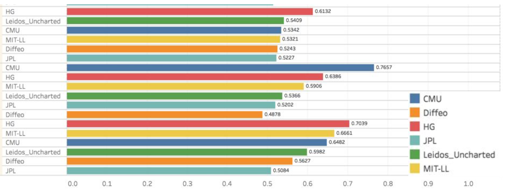

Research
KB-ASearch: Interpretable Active Search with Knowledge Bases [pdf]

In Submission, WWW '17
We approach the problem of Active Search at the granularity of entities present in the document corpus, as opposed to defining explicit similarity kernels to the documents. We show our approach is scalable, and allows flexibility in supervising the entities. We also propose heurestics as exploratory criterie for the search task.
Semi-Supervised Prediction of Comorbid Rare Conditons [pdf]

Oral Presentation at DMBIH, IEEE ICDM '17
Joint Work with UPMC Dept. of Critical Care MedicineWe propose a Machine Learning Pipeline that explicitly exploits the inherent Hierarchy of ICD-9 Codes, resulting in an interpretable model that has better predictive performance for Rarer Medical Conditions like Venous Thromebolism.
Entity Resolution to Isolate Instances of Human Trafficking Online [pdf]

Oral Presentation at Bloomberg Data 4 Good Exchange (D4GX) '17
Paper in Workshop on User Genetated Noisy Text, ACL EMNLP '17We mined data from over 4M Publically Available Escort advertisements, and constructed data driven pipeline to perform Entity Resolution and isolate solicitors. Then then utilised supervised machine learning to classify these resolved entities as being indicative of trafficking, with prior ground truth.
Challenges and Hackathons
Exploratory Analysis of Genomic Data from Cancerous and Healthy Populations [pdf] [press]
First Place Cash Award of $20k at Citadel Datathon '17
We analysed Gene Expressions in Multiple Tissues from Populations of Healthy and Cancerous individuals using the GTEx and TCGA datasets and exploited unsupervised techniques like stochastic neighbourhood embeddings to featurize the gene expressions in a non parametric setting. We also proposed rank order based features, and finally built classification models, over the expression levels, to classify there source. Our team was the winning entry and received a Cash Prize of $20k
Cross Domain Persona Linking Credit Card Hackers on Online Forums [pdf] [code]
Deliverable for DARPA MEMEX and the FBI
Competitvely Outperformed Teams from Leading Academic and Industrial PartnersFor DARPAs MEMEX Quaterly Program Review, we presented personaLink A Python tool to extract features from, and train supervised classifiers for Pairwise classification of users across Internet Forums. personaLink was applied on Credit Card hacking forums with limited ground truth, and outperfomed top MEMEX participants.
Course Projects
Joint Modeling of Electronic Health Records and Clinical Notes [pdf]

CS-LTI-747 Course Project
We investigate Deep Multimodal Techniques to Model the Course Time Series of Electronic Health Records. Here are Modalities being ICD Codes in subsequent admissions, along with the Clinical Notes. We empirrically evaluate the performance of a model trained jointly on the modalities, using the popular MIMIC-III Dataset
Crime Scene Footprint Matching for Recidivism Prediction [pdf]
Experimental Exploration of Trigram Kneser-Ney Language Models [pdf]
Parsing with Unlexicalised Probabilistic Context Free Grammar [pdf]
Reranking Probabilistic Parses with Supervised Learning [pdf]
Comparitive Study of Word Alignment Models for Machine Translation [pdf]